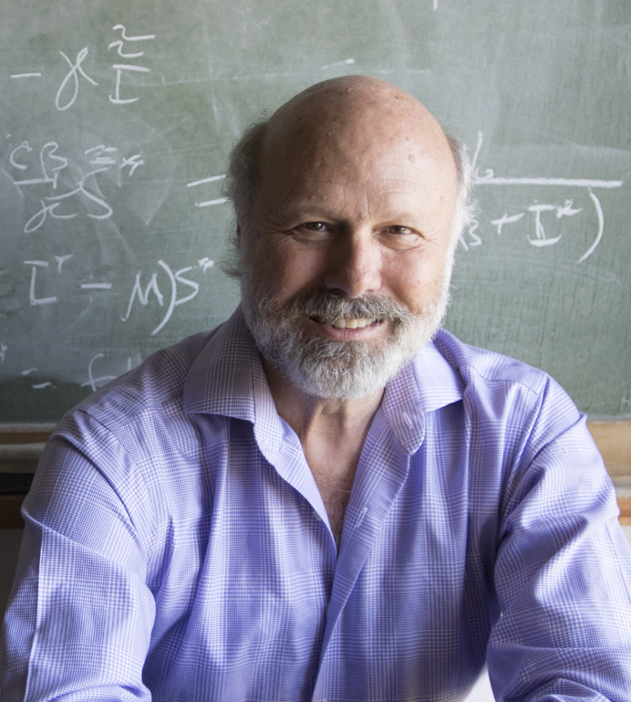

-
Principal
-

Mac Hyman
My research interests include building a solid mathematical foundation for difference approximations to partial differential equations and using mathematical models to better understand and predict the spread of epidemics. Most of my publications are in mathematical modeling and I have passion for writing quality software for numerical differentiation, interface tracking, adaptive grid generation, and the iterative solutions of nonlinear systems.
-
Post-Doctoral Researchers
-
Zhuolin Qu
I am a Postdoctoral Fellow, doing mathematical modeling for infectious diseases. I use math tools to help public health researchers better understand how the disease is spreading and optimize the mitigation resources. Recently, I am looking into Wolbachia transmission in wild mosquitoes to control mosquito-borne diseases.

-
Graduate Students
-
Jessica Conrad
I am a mathematical epidemiologist. I use mathematical models to understand disease dynamics in populations. I am particularly interested in vector borne diseases and how behavior change can be used to mitigate disease. Previously, I have researched the impact of behavior change on the spread of Ebola and how to use nonpathogenic strains to mitigate Chagas disease. Currently, I am doing research at Los Alamos National Laboratory on how to use satellite images to forecast dengue in Brazil.
-
Lin Li
I am a third year Phd student, working with Dr. James (Mac) Hyman, in the Department of Mathematics of Tulane University in New Orleans, LA. My current research interests are machine learning, deep learning, optimization and Stochastic Process.
-
You (Hugh) Lu
My current research projects involve in the type 2 diabetes related physiology experiments and computational modeling. Specifically, I am doing these procedures on rats pancreas to seek an explanation to why by-pass surgery can cure type 2 diabetes patients in clinic. Meanwhile, I’m using a computational model to predict the binding effects between calcium channel and re-design blockers.

-
Erin Stafford
I am currently a Master's student at Tulane in the Computational Sciences Program. My research experience is in epidemic and ecological modeling. The projects I have worked on include modeling the spread of such diseases as chikungunya and Zika in the Caribbean, and studying the effects of an invasive species on the saguaro cacti in the Sonoran Desert. My current area of focus is in uncertainty quantification and parameter identification in mathematical modeling.
-
Undergraduates
-
Emily Meyer
I am an undergraduate student majoring in Mathematics and Neuroscience with a Public Health Minor at Tulane University. I am currently researching the effects of chronic diseases, specifically diabetes, on the progression and drug resistance of tuberculosis. I have also previously worked on modeling vector-borne diseases. Additionally, I am doing neuroscience research in the Schrader Lab at Tulane and am interested in studying mathematical biology in a Ph.D. program.
-
Elsewhere
-
Jeremy Dewar
Having studied high-dimensional function approximation and integration, plasma physics, computational epidemiology and ideal gas dynamics, Jeremy has found a career in blockchain technologies.